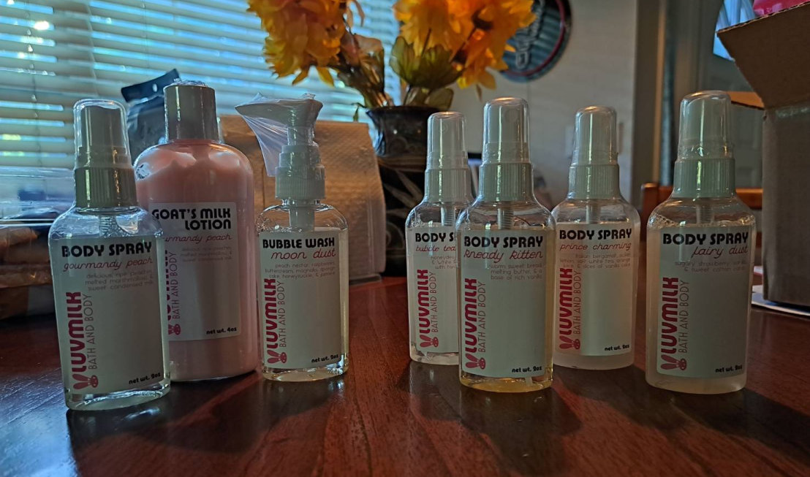

A conversation with a coworker about fragrances and scent preferences led me down a little indie fragrance rabbit hole. Within searches for good "bread" scents were a few folks praising Luvmilk Bath and Body for their gourmand scents and wanted to give them a shot. Mother's Day was the closest excuse I had for a "large" purchase, so I grabbed some things for myself, mom, sister, and girlfriend.
For some context: (harp-like flashback sound effect) Through tweenhood, I was a Bath & Body Works child. The store concept was pretty novel to me and I received vanilla-scented gift sets from my mom yearly... basically, I always had a supply of lotion and spray and had no urge to experiment. Unfortunately they're not worth the price unless purchased at their bi-annual sales. Neither their lotions nor creams moisturize well, and the sprays hold their scent for an hour at best, on skin or clothes. Gold Bond is my current lotion of choice and my skin is happier with that, but I lacked a "signature scent." Not that that's important for anything but self-fullfillment, but when your coworker smells like a beautiful vanilla bomb went off...
For a while it was this B&BW "Cozy Vanilla Bourbon" spray my sister gifted me. Dare I say it's the only B&BW spray I've used that lasts? It lingers in the air so I spray it around my bedroom sometimes, and still have plenty of it. I just wanted to try something new. Below are the items I tried.
"Warm sweet bread, melting butter, a base of rich vanilla."
This was the reason I originally ordered. Maybe my expectations were elevated because the initial scent from the bottle and when sprayed was... terrible... like a sharp, nasty Play-Doh. I reckon it's a vanilla fragrance oil since that seems to be used in some of their scents. In a retail setting, that first impression would turn me off fast.
However, it makes a total 360 once it sets. After about 5 minutes it becomes a warm caramel cloud, not remotely as sharp as when smelled from the bottle. I have to resist lifting my arm to smell it every few minutes. Yum! 4/5.
"Honeydew, strawberry, and white rabbit taffies with taro bubble tea."
How about something fruity to balance out the sweet vanilla crap? This is wonderful smelt from the bottle and applied, especially on clothes. It is surprisingly tart and reminds me of fruity hard candies as opposed to the "milky" smells the description suggests. Like the taste of a Watermelon Jolly Rancher. I will definitely buy another bottle of this once I run out, maybe in dusting powder form too. 5/5.
"Tart Italian bergamot, Sicilian lemon, soft white tea, squeezes of orange juice, and sweet slices of vanilla cake."
This Spring-exclusive scent is gentle and refreshing, but would make for a great year-round scent. Citrusy goodness but not sour, like Earl Grey tea. Reminds me of a pear in its mildness. Like the others, it lasts for a few hours on skin and clothes. Def recommend and would make a good dusting powder. 5/5.
The items were packed well and arrived earlier than expected. The owner handwrote a message on my invoice and used a bunny-shaped holepunch, a lovely touch. They are transparent about their workflow, have a clear TOS, and warn customers of potential issues with product ingredients. I can confidently recommend their service.
I'd like to try Festival Nights, Pouty Kitten, and Mele'Oli next. Thanks for reading...
Back...